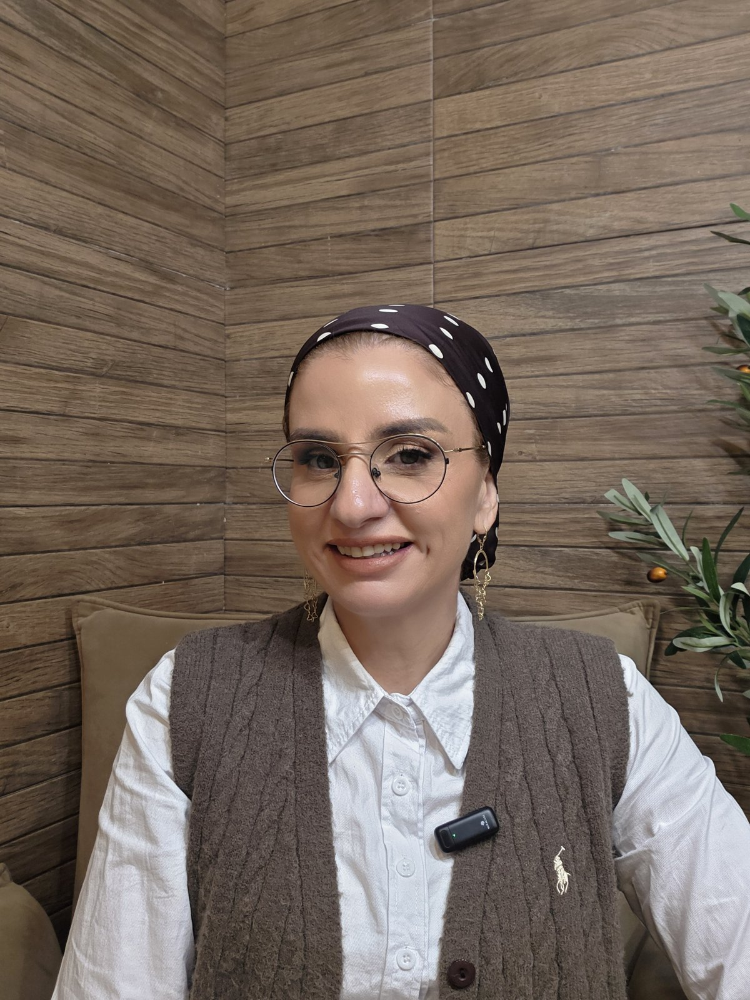

אתי טולדו | הנחיית הורים, חינוך ומשפחה
תחנת כח לאמהות
כי גם אמא צריכה מקום שממלא אותה בכח.
מקום לעצור, להתחזק, לקבל כלים ולחזור הביתה עם כוחות חדשים.


תחנות הכח שלי
לאיזה כח את זקוקה היום?
״להיות הורה זה להבין שלכל ילד יש את השביל המדויק לו מתוך אמונה שאנו ההורים קיבלנו את הכח להוביל אותם בבטחה״
הסיפור שלי
נעים להכיר, אני אתי טולדו
אשת חינוך, מרצה, מכשירת סטודנטיות להוראה ומנחת הורים.
נשואה לשלמה ואמא לשישה ילדים. שני הגדולים שלנו הם ילדים מיוחדים, שזכינו לגדול ולצמוח בזכותם.
דווקא הם לימדו אותנו את אחד השיעורים המשמעותיים בחיינו: להאמין בכל ילד באשר הוא, לראות מעבר לקושי, לקבל, לאהוב ולגלות את הכוחות והיכולות הטמונים בו.
- B.Ed · M.Edתואר ראשון ושני בחינוך
- שפ״יהכשרה בהנחיית הורים
- הגיל הרךהכשרת סטודנטיות בגיל הרך
מה אמהות אומרות
הגעתי עם שאלות, יצאתי עם כח
הגעתי לסדנא מאוד סקפטית ועם המון חששות. נתת לי חוזק, כלים איך לדייק את ההורות שלי יחד עם בעלי, וגם לדייק את הזוגיות שלי. מכל מפגש יצאתי בעננים, טעונה לדבר ולפרוק ולחבק את הילדים שלי חזק.
יוצאת מהסדנא עם תיק מלא בצידה מבורכת: סבלנות, הכלה, הקשבה, רוגע, נתינה, עמידה במצבי לחץ, הנכונות לדעת איך לפעול ומתי לעצור לפני, ולחשוב רגע איך אני מגיבה.
לאחר כל מפגש חזרתי הביתה עם עוד רצון וחשק לשנות ולהשתנות. אני יכולה לומר שב״ה בחודש האחרון הבית הרבה יותר רגוע, הילדים יותר רגועים, אני יותר רגועה.
באתי להדרכה עם בלבול במוח ואי סדר, כמו בנאי שבא לבנות בניין ואין לו כלים. ככה אני עכשיו מרגישה שיש לי המון כלים ויכולת.
הגעתי עם חוסר ודאות לקראת מה אני מגיעה בכלל, והאם אני בדרך החינוכית הנכונה. יצאתי עם ביטחון בהורות וכלים לפעול לפי הדרך שאני רוצה שהבית שלי יהיה.
הגעתי לסדנה עם רעב לכלים וידע, ויצאתי מסופקת בכלים להמשך הדרך בהורות! ההרגשה לצאת מכל סדנה שלך זה כמו לצאת משיעור תורה ולהרגיש באורות.
כבר במפגש הראשון הרגשתי שאני צמאה לעוד ועוד מפגשים. כל מפגש יותר ויותר מעצים, מדייק, פותח את החשיבה, נותן כוח לחנך.
עזרת לי להאמין באמהות שלי ולדייק אותה. נתת לי המון כלים יומיומיים ומהותיים שאני מיישמת, ויש שיפור בחיי המשפחה.
הייתי בטוחה שאני נמצאת במקום מושלם עם ילדיי וחשבתי שאני כבר יודעת הכל. והיום בפה מלא אני אומרת שלמדתי, ובזכות הסדנא הבית שלי הרוויח.
איך אפשר לעבוד יחד
ליווי, הרצאות וסדנאות
הדרכת הורים וליווי אישי
לפעמים כל מה שצריך הוא מישהו שיעזור לנו לראות את הדברים קצת אחרת. מפגשים אישיים בקליניקה בנתניה או בזום, עם כלים מעשיים לבית.
בואי נדבר על ההורות שלך 02הרצאות וסדנאות
להורים, לקהילות, למסגרות חינוך ולארגונים. סדנאות קצרות וממוקדות, וסדנאות מותאמות לצרכים של המסגרת שלכם.
להזמנת הרצאה 03העולם החינוכי שלי
לצוותי חינוך ולגננות: הרצאות, סדנאות וכלים לעבודה בגיל הרך, ולתקשורת טובה בין הורים לצוות.
לפרטיםהפודקאסט · הסיפור שמאחורי הדרך
זוג הורים, שניים מיוחדים ואמונה אחת גדולה
פודקאסט אישי על המסע ההורי והמשפחתי שלי. המקום להכיר את האישה שמאחורי התפקידים המקצועיים.
קהילת תחנת כח לאמהות
גם לך מגיע מקום שממלא אותך בכח
- תכנים מקצועיים להורות
- כלים מעשיים
- פינות השראה
- שיח על חינוך ומשפחה
- עדכונים על הרצאות וסדנאות
- קהילה של אמהות
צרי קשר
בואי נדבר על ההורות שלך
לפנייה אישית, להזמנת הרצאה או סדנה למוסד, או סתם לשאלה. הקליניקה בנתניה, ויש גם מפגשים בזום. לשאלות נפוצות ← אפשר בוואטסאפ, בטלפון או בטופס.